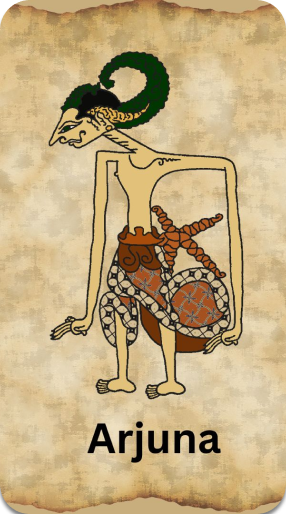

Ing jagad ora ana tandhingane bab kebagusane, amarga Janaka minangka simbol
amal becik. Amal becik ora bisa pisah klawan swarga (Jannah). Janaka saka
tembung jannahuka, tegese swargamu. Mula sapa sing kepengin mlebu swarga,
kudu tumindak becik lan nindakake tuntunaning agama kanthi temen.
Arjuna
satriya digdaya sekti mandraguna, polatan luruh jatmika, prigel ing
samubarang, seneng tetulung marang sapa bae, mula ditresnani dening sapa
bae. Ora mokal yen garwane pirang – pirang. Bojo akeh iki tegese Janaka
ditresnani dening sapa bae. Yen priya ngondhangake kasudibyane, yen wanita
ngondhangake sigiting citra.
Arjuna kejaba sugih bojo, uga sugih
kawruh (ilmu), sugih gaman lan mantran, sugih guru. Meguru marang Begawan
Padmanaba antuk aji telung warna, yaiku :
1. Aji Sepiangin, dayane aji yen kawateg, kebating lakune Arjuna tan prabeda
kaya kebating angin. Lakune bisa ngungkuli lakuning barat,
2. Aji Malayabumi, Arjuna bisa ilang sapalungguhan,
3. Aji
Sempaliputri, Arjuna bisa manijing ajur ajer.Pusakane pirang – pirang. Kang
asring digunakake : Keris Pulanggeni, Kalanadhah, Panah Merdaging, Rodha
Dhadhali, Haryas Sangkala, Sarutama, Pasopati.
Arjuna

Ini adalah website yang dibuat untuk semua orang yang ingin mempelajari atau
mengenal seputar wayang
ABOUT US
Alamat
Pandawa 5
Jalan Laksda Adi Sucipto Gg. Stasiun 30 Kelurahan Purwodadi,Kecamatan
Blimbing Kota Malang, Indonesia 65125